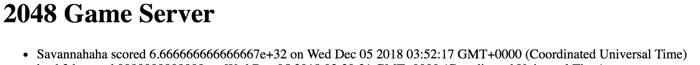
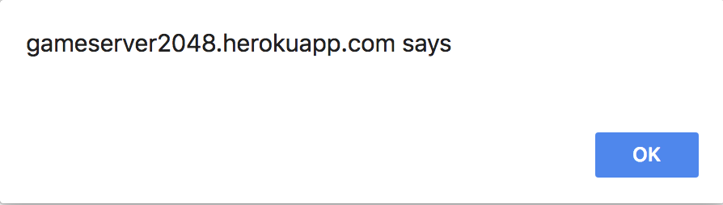
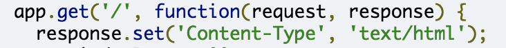
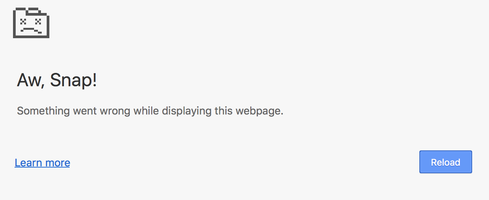
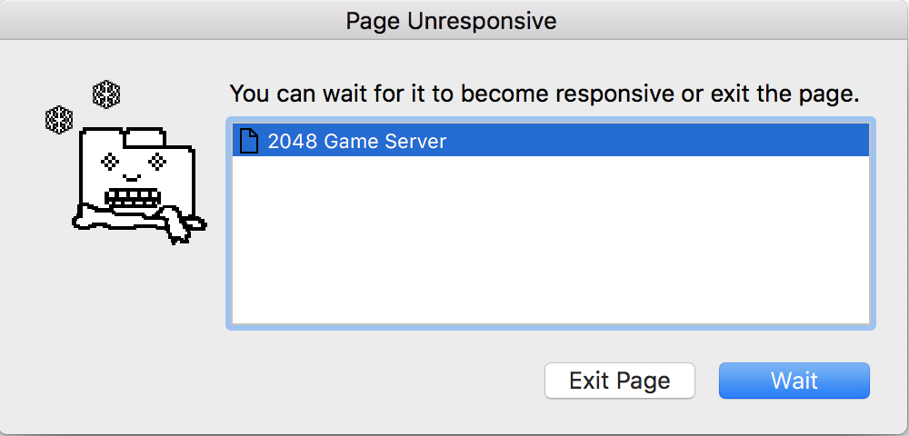

In this assignment I assessed Ming's source code from Assignment 3 and looked for security vulnerabilites.
For the pen testing, the primary tool that I used was curl. I tested to see what parts of the site I could access and manipulate using curl.
I found multiple security vulnerabilites. For example, the data and information in the site is very vulnerable and easy to change and manipulate. Through the same avenue that I manipulated the scores, I was able to insert other bugs and even break the website.
| Issue | Location | Severity | Description | Proof of Vulnerability | Resolution |
|---|---|---|---|---|---|
| Database Injection | Index.html (scores page) | Medium: Any outside source can manipulate the scores being displayed. | By using curl I was able to add fake information to the scores list.
curl --data "username=Savannah&score=999&grid={}" https://gameserver2048.herokuapp.com/submit
|
 | To prevent this, validate all input before putting it in the database. |
| Cross Site Scripting | Index.html (scores page) | Medium: This is an example of the more malicious things outside sources can do just by having access to the data. | By using curl I was able to add fake information to the scores list.
curl --data "username=<script>window.alert();</script>&score=0&grid={}" https://gameserver2048.herokuapp.com/submit
|
 | Content-type header is not secure because it is set to text/html. An alternative that would prevent XSS attacks is setting the content type to application/json.  |
| Cross Site Scripting | Index.html (scores page) | High: This vulnerability allowed me to completely break the site so that it could not be rendered at all. | By using curl I was able to inject an infinite loop causing the site to
overload and crash.
curl --data "username=<script&rtwhile(true);</script&rt&score=0&grid={}" https://gameserver2048.herokuapp.com/submit
|
  | Content-type header is not secure because it is set to text/html. An alternative that would prevent XSS attacks is setting the content type to application/json. |